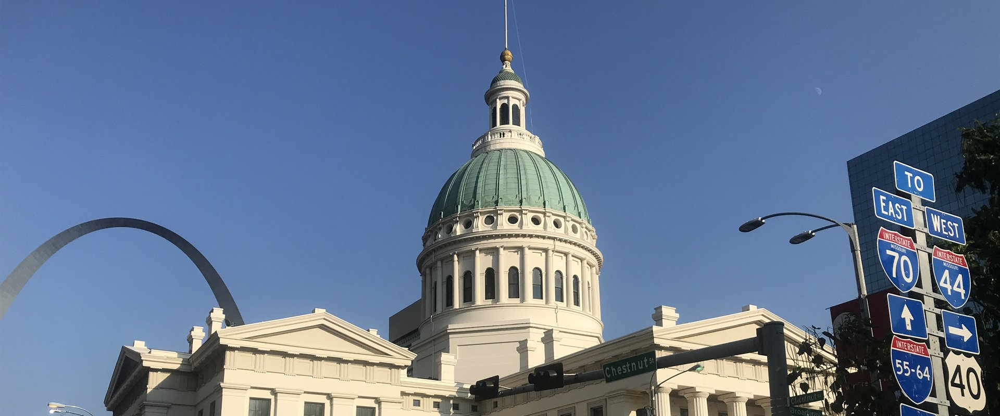
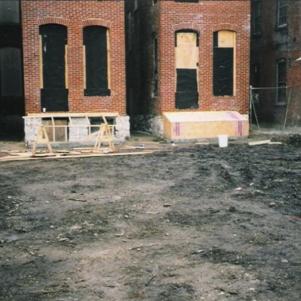
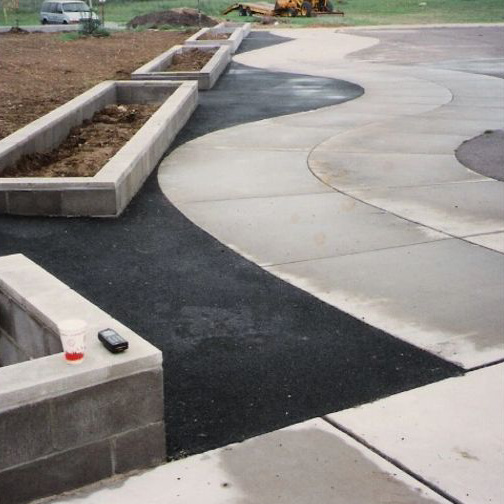
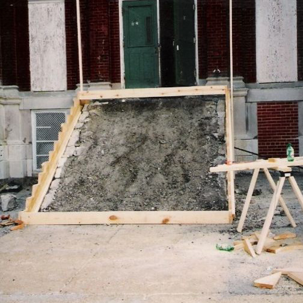
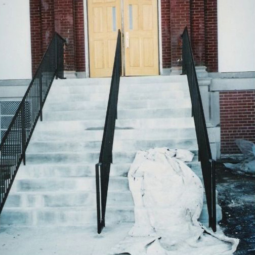

Our work
Craftsmanship across St. Louis.
Historic landmarks. Public institutions. St. Louis homes. Nearly six decades of craftsmanship.
Featured projects
Trusted with landmarks.
01
Historic Restoration
The Iconic & Historic St. Louis Gateway Arch
Dan Milbourn Construction was selected to carry out masonry work at the Gateway Arch for the National Park Service, replacing the broken granite pavers at the entrance and sealing the joints throughout the patio area. As a St. Louis born and grown company, we were honored to be chosen to help restore the setting of the city’s most famous landmark.
02
Historic Preservation
The Historic Old Courthouse
Dan Milbourn Construction again teamed up with the National Park Service to repair one of St. Louis’ best-known historic landmarks. The Old Courthouse is on the Underground Railroad register and is known for its role in landmark civil rights cases. The scope of work was extensive: rebuilding the massive stone chimneys, repairing the granite retaining walls and iron fencing, painting, and installing a new wheelchair-accessible elevator so that everyone has the opportunity to experience this part of history.
03
Facade Restoration
The Historic Post Office & Customs House
Dan Milbourn Construction was handpicked to bring back the grandeur of this architecturally striking, 140-year-old building in downtown St. Louis. The facade was thoroughly cleaned and sealed with water repellent, returning the limestone and marble to their original beauty and vibrance.
Before & after
The transformation is the story.
Drag the handle across each photograph to see the work.

Before After01
Structural wall reconstruction
Historic Scott Joplin House
The State of Missouri acquired the property once owned by the ragtime composer Scott Joplin. The entire back wall of the historic building had fallen into ruin. Dan Milbourn Construction rebuilt the wall to historic preservation standards, restoring both the structure and the character of the building.

Before After02
New masonry flower boxes
St. Louis Public School District — Flower Boxes
The St. Louis Public School District needed masonry flower boxes built at the front entrance of one of their schools.


Before After03
Stair demolition, rebuild and handrails
St. Louis Public School District — Stair Reconstruction
The existing concrete stairs were crumbling and in need of repair. The team at DMC came in, demolished the stairs and rebuilt them, then added new steel handrails to complete the look and improve the facade.
More notable work